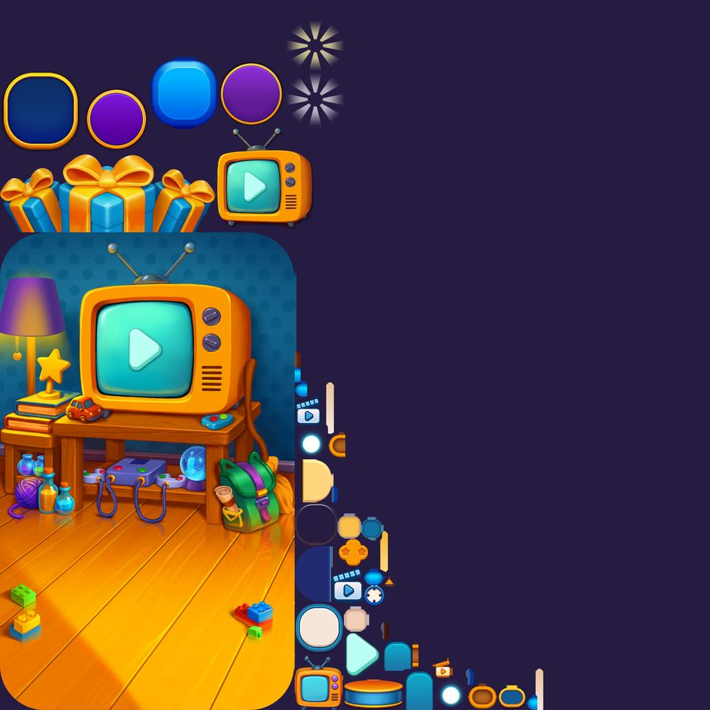

Xem và thắng (Watch and Win)
Đổi nhiều lượt rewarded thành một mục tiêu mốc nhìn thấy trước, thay vì những lượt xem rời rạc không có đích.
Chưa có case chính trong hai lượt review 15–16/11. Nội dung theo mã/config; ảnh ngữ cảnh không được tính thành playtest tính năng. Xem bằng chứng và phần còn thiếu.
Mô tả
- Watch and Win thưởng người chơi theo số quảng cáo có thưởng đã xem: mỗi lần xem trọn cộng 1 vào tiến độ.
- Khi tiến độ chạm một mốc trong RequiredAdCountsToWatch, người chơi nhận phần thưởng tương ứng trong Rewards.
- Cấu hình mặc định có 3 mốc tại 1, 2 và 3 quảng cáo, trả lần lượt
 100 coin, 200 coin và 500 coin.
100 coin, 200 coin và 500 coin. - Mốc cuối cùng là Grand Prize, hiển thị riêng bằng WatchAndWinGrandPrizeView.
- Có hai chế độ loại trừ nhau: chế độ tĩnh (mốc + thưởng song song) và chế độ động (DynamicStages).
- Chế độ động dùng danh sách WatchAndWinStep gồm TargetAdCount và Reward, cho server đổi mốc linh hoạt hơn.
- Tính năng cần hai cổng bật: cờ IsEnabled trong remote config và cờ riêng trong AdConfigModel từ backend.
- Icon lobby hiển thị vòng tiến độ số quảng cáo đã xem trên tổng số cần xem.
- Popup có thể tự mở khi vào Home hoặc quay lại Home, nhưng bị kiểm soát tần suất bằng PopupTriggerCount.
- Đây là kênh doanh thu quảng cáo dành cho người chơi không chi tiền, mọi thưởng ghi lý do CurrencyEarnReason.WatchAndWin.
Thiết kế chi tiết
Tóm tắt thiết kế
Đổi nhiều lượt rewarded thành một mục tiêu mốc nhìn thấy trước, thay vì những lượt xem rời rạc không có đích.
Xem mốc → hoàn tất rewarded → tăng số lượt → nhận quà mốc → tiếp tục tới Grand Prize.
Lớp diễn giải thiết kế từ source và dossier hiện có; outcome là expected. Quan sát round2 được gọi rõ; chưa phát sinh playtest hoặc xác nhận backend mới.
Chưa có ảnh chụp màn hình cho tính năng này trong nguồn đã kiểm. Ảnh tài nguyên (nếu có) nằm ở hồ sơ hình ảnh; không thay cho screenshot playtest.
Luồng người chơi từng bước
- 01
Tích một lượt xem
Người chơiChọn xem rewarded và hoàn tất.
Điều kiện / luật: Chỉ kết quả đủ điều kiện tăng ad count; bấm nút hay xem dở không phải một lượt tích.
Kết quả theo đặc tả: Tiến độ tăng cho một lượt thành công.
- 02
Nhận quà mốc
Người chơiĐạt TargetAdCount hoặc mốc tương ứng.
Điều kiện / luật: Bản tĩnh có hai mảng RequiredAdCountsToWatch/Rewards; bản động dùng từng WatchAndWinStep.
Kết quả theo đặc tả: Nhận đúng reward của mốc.
- 03
Kết thúc chuỗi
Người chơiHoàn thành mọi mốc và đọc Grand Prize.
Điều kiện / luật: Cần theo chu kỳ hiện tại; không chuyển số lượt sang event khác bằng giả định.
Kết quả theo đặc tả: Chuỗi đi tới trạng thái hoàn tất.
Quy tắc cần nắm
| Quy tắc | Hành vi theo nguồn | Căn cứ |
|---|---|---|
| Tích một lượt xem | Chỉ kết quả đủ điều kiện tăng ad count; bấm nút hay xem dở không phải một lượt tích. | |
| Nhận quà mốc | Bản tĩnh có hai mảng RequiredAdCountsToWatch/Rewards; bản động dùng từng WatchAndWinStep. | |
| Kết thúc chuỗi | Cần theo chu kỳ hiện tại; không chuyển số lượt sang event khác bằng giả định. |
Số liệu & phần thưởng
Phần thưởng
MỐC VÀ PHẦN THƯỞNG (WatchAndWinConfigModel.json, client default)
| Mốc | Điều kiện | Phần thưởng |
|---|---|---|
| Mốc 1 | Xem 1 quảng cáo |  100Coin 100Coin |
| Mốc 2 | Xem 2 quảng cáo | 200Coin |
| Mốc 3 (Grand Prize) | Xem 3 quảng cáo | 500Coin |
CẤU TRÚC THƯỞNG THEO CHẾ ĐỘ
| Chế độ | Nguồn dữ liệu | Phần thưởng |
|---|---|---|
| Tĩnh (mặc định) | RequiredAdCountsToWatch + Rewards song song | RewardModel theo bước (server ghi đè được) |
| Động (IsDynamicStagesEnabled = true) | DynamicStages: WatchAndWinStep{TargetAdCount, Reward} | Reward gắn trực tiếp vào từng mốc (server) |
| Grand Prize | Mốc cuối của danh sách đang dùng | Hiển thị bằng WatchAndWinGrandPrizeView (server) |
TRẠNG THÁI (WatchAndWinState)
| Mã | Trạng thái | Ý nghĩa |
|---|---|---|
| 0 | Disable | IsEnabled = false |
| 1 | ProgressNotEnough | Level dưới FirstLevelToShow |
| 2 | NoCache | Chưa có WatchAndWinResponse |
| 3 | Enable | Đang chạy có thể xem quảng cáo |
| 4 | LocalTimeIsUp | Hết hạn chu kỳ ở client |
| 6 | Claimed | Đã hoàn thành toàn bộ mốc (không có giá trị 5) |
Phần thưởng theo code
| Ngữ cảnh | Phần thưởng | Evidence |
|---|---|---|
| Mốc quảng cáo (chế độ tĩnh) | WatchAndWinConfigModel.Rewards theo bước — CurrencyEarnReason.WatchAndWin (32) | WatchAndWinService.GetRewardByProgress |
| Mốc quảng cáo (chế độ động) | WatchAndWinStep{TargetAdCount Reward} trong DynamicStages | WatchAndWinConfigModel.DynamicStages |
| Grand Prize | Mốc cuối cùng hiển thị bằng WatchAndWinGrandPrizeView | WatchAndWinService.HasReachedTotalRequiredAdCount; WatchAndWinGrandPrizeView |
Số liệu chính
| Chỉ số | Giá trị | Nguồn |
|---|---|---|
| Level mở khoá | 30 (client default) | WatchAndWinConfigModel.json: FirstLevelToShow |
| Trạng thái bật/tắt mặc định | false | WatchAndWinConfigModel.json: IsEnabled |
| EventType gửi backend | 1 | WatchAndWinConfigModel.json: EventType |
| Các mốc quảng cáo mặc định | [1, 2, 3] | WatchAndWinConfigModel.json: RequiredAdCountsToWatch |
| Thưởng mốc 1 | 100 coin (CurrencyType 1) | WatchAndWinConfigModel.json: Rewards[0] |
| Thưởng mốc 2 | 200 coin (CurrencyType 1) | WatchAndWinConfigModel.json: Rewards[1] |
| Thưởng mốc 3 | 500 coin (CurrencyType 1) | WatchAndWinConfigModel.json: Rewards[2] |
| Tổng coin nếu xem đủ 3 quảng cáo | 800 coin (suy luận từ 100 + 200 + 500) | WatchAndWinConfigModel.json: Rewards |
| Nguồn yêu cầu quảng cáo | AdRequestSource.WatchAndWin = 8 | AdRequestSource |
| Lý do nhận thưởng | CurrencyEarnReason.WatchAndWin = 32 | CurrencyEarnReason |
| Số trạng thái | 6 giá trị (0–4 và 6, thiếu 5) | WatchAndWinState |
| Nguồn mở popup | None=0, LobbyIcon=1, ForceShow=2 | WatchAndWinPopupImpressionSource |
| Tên popup kiểm tra trước khi fetch | "WatchAndWinPopup" | WatchAndWinStateService.ShouldSendGetRequest |
| Tên khối sync | WatchAndWinSyncableDataModel | WatchAndWinDataService.GetSyncName |
| Số field WatchAndWinAnimationConfig | 14 | WatchAndWinAnimationConfig |
| Số field WatchAndWinLobbyButtonAnimationConfig | 13 | WatchAndWinLobbyButtonAnimationConfig |
| Trường lưu tiến độ | WatchAndWinModel.AdProgress | WatchAndWinDataService.GetAdProgress |
| Trường kiểm soát tần suất popup | PopupTriggerCount, IsPopupShown | WatchAndWinModel |
| Chu kỳ sự kiện | StartTime / FinishTime (server) | WatchAndWinResponse |
| Phân khúc người chơi | Segment (server) | WatchAndWinResponse.Segment |
Các quyết định trong luồng
| Tình huống | Cách xử lý theo nguồn | Căn cứ |
|---|---|---|
| Mốc động khác A/B ở đâu? | Mốc động là cấu trúc nội dung có selector cấu hình; muốn gọi A/B cần thêm bằng chứng phân bổ variant và cohort. | Nhận định thiết kế từ cơ chế có nguồn; không phải hiệu quả đã đo. |
Nhánh lỗi và phục hồi
| Điều kiện | Hành vi mong đợi | Phạm vi đã kiểm |
|---|---|---|
| Nhánh lỗi, gián đoạn hoặc chuyển trạng thái của Watch and Win | Không có ad hoặc xem dở giữ nhánh unavailable/cancel, không cộng mốc. | Theo UC/source trong hồ sơ; runtime chỉ có giá trị ở đúng case và snapshot đã liên kết. |
Nhận định & vận dụng
Mốc động là cấu trúc nội dung có selector cấu hình; muốn gọi A/B cần thêm bằng chứng phân bổ variant và cohort.
Suy luận thiết kế; không thay bảng cấu hình hoặc giới hạn thực nghiệm.
Ảnh chụp bổ sung & nguồn bằng chứng
Chưa có screenshot trong nguồn hiện có; giữ mục này để bổ sung khi có bằng chứng.
Case đầy đủ: expected, actual và ledger · Ảnh lịch sử và tài nguyên gốc
Mở khóa & điểm vào
WatchAndWinStateService.CanShowWatchAndWin() kết hợp: WatchAndWinConfigModel.IsEnabled, level >= WatchAndWinConfigModel.FirstLevelToShow (IPlayerService), IsEnabledFromBackendAdConfigModel() (cờ trong cấu hình quảng cáo do backend gửi), và có cache WatchAndWinResponse. Trạng thái thiếu điều kiện phản ánh trong WatchAndWinState: Disable(0), ProgressNotEnough(1), NoCache(2).
Điểm vào:
- WatchAndWinLobbyButton (+WatchAndWinLobbyButtonAnimationView) — icon ở Home với vòng tiến độ
- OpenWatchAndWinPopupCommand — mở WatchAndWinPopup
- WatchAndWinHomeWelcomingCommand — tự bật khi vào Home
- TryToShowWatchAndWinLobbyReturnCommand — tự bật khi quay lại Home
- Popup tự mở sau khi nhận thưởng (CanOpenPopupAfterReward)
Cách hoạt động
- Kiểm tra điều kiện: trạng thái Disable(0) nếu IsEnabled = false, ProgressNotEnough(1) nếu level < 30, NoCache(2) nếu chưa có cache sự kiện.
- Cổng thứ hai: cấu hình quảng cáo từ backend phải cho phép (IsEnabledFromBackendAdConfigModel).
- Lấy chu kỳ: gửi WatchAndWinRequestModel{EventType = 1} và nhận về EventId, StartTime, FinishTime, Segment.
- Cache phản hồi và đặt hẹn giờ lấy lại chu kỳ khi hết hạn (ScheduleWatchAndWinFetch với SecondTimer).
- Icon lobby hiển thị vòng tiến độ với CurrentProgress trên TotalProgress.
- Popup tự mở khi vào Home hoặc quay lại Home nếu bộ đếm PopupTriggerCount vượt ngưỡng và popup chưa hiện trong phiên.
- Mở popup gửi analytics watchandwin_popup_impression kèm nguồn None(0)/LobbyIcon(1)/ForceShow(2), rồi reset bộ đếm.
- Xem quảng cáo: AdService phát rewarded ad với AdRequestSource.WatchAndWin (8).
- Xem trọn quảng cáo: AdProgress tăng 1, tín hiệu cập nhật UI, analytics watchandwin_ad_impression với ad_number.
- Quy đổi tiến độ: số quảng cáo đã xem được chuyển thành bước hiện tại (GetStepProgressByWatchedAdCount).
- Chạm mốc: hệ thống tra phần thưởng theo bước và trao qua RewardService với lý do CurrencyEarnReason.WatchAndWin (32).
- Sau khi nhận thưởng, popup có thể mở lại ngay để mời xem tiếp mốc sau (CanOpenPopupAfterReward).
- Chế độ động: nếu IsDynamicStagesEnabled bật, UI đổi sang DynamicWatchAndWinView và dùng DynamicStages thay cho cặp mốc/thưởng tĩnh.
- Hoàn thành: khi đạt tổng số quảng cáo yêu cầu, nhận Grand Prize và trạng thái chuyển Claimed(6).
- Hết hạn chu kỳ: trạng thái chuyển LocalTimeIsUp(4), dữ liệu cũ được dọn và chu kỳ mới được lấy về.
Luồng chi tiết theo code
WatchAndWinStateService.GetState() cho ra WatchAndWinState: Disable(0) → ProgressNotEnough(1) → NoCache(2) → Enable(3) → LocalTimeIsUp(4) → Claimed(6). Khi ShouldSendGetRequest() (và popup 'WatchAndWinPopup' không mở), WatchAndWinService.TryFetchCurrentEvent() gửi WatchAndWinRequestModel{EventType} và HandleWatchAndWinResponse(response) → UpdateAndCacheBackendOfferResponse() lưu WatchAndWinResponse{EventId, EventType, StartTime, FinishTime, Segment} qua WatchAndWinDataService.CacheBackendResponse(). ScheduleWatchAndWinFetch() dùng SecondTimer để lấy lại khi hết hạn. Tiến độ: mỗi lần xem xong một quảng cáo có thưởng (AdRequestSource.WatchAndWin = 8), WatchAndWinService.TryIncreaseAdProgress() tăng WatchAndWinModel.AdProgress qua WatchAndWinDataService.SetAdProgress() và Invoke Signal; GetAdProgress() cho UI. Mốc: GetRequiredAdCountsToWatch() trả WatchAndWinConfigModel.RequiredAdCountsToWatch; GetTotalRequiredAdCount() là mốc cuối; GetStepProgressByWatchedAdCount() quy đổi số quảng cáo đã xem thành bước; IsOnRewardStep() báo vừa chạm mốc; GetRewardByProgress(stepProgress) trả RewardModel tương ứng trong Rewards; HasReachedTotalRequiredAdCount() báo đã hoàn thành. Chế độ động: IsDynamicStagesEnabled() bật DynamicStages (List<WatchAndWinStep>{TargetAdCount, Reward}) và UI DynamicWatchAndWinView / WatchAndWinDynamicRewardView. Thưởng trao qua RewardService với CurrencyEarnReason.WatchAndWin (32). Popup: WatchAndWinService.ShouldForceShowPopup() dùng WatchAndWinModel.PopupTriggerCount (IncrementPopupTriggerCount / ClearPopupTriggerCount) và IsPopupShown để không spam; OnPopupOpened() ghi nhận. Analytics: watchandwin_popup_impression (impression source) và watchandwin_ad_impression (ad_number).
Tài nguyên hình ảnh (1)
Ảnh gốc và tài nguyên trong hồ sơ nền; không phải ảnh playtest mới ngày 16/11.
1 ảnh tài nguyên trong APK. Bấm ảnh để phóng to; ảnh chụp lịch sử mở PNG gốc. Nhãn UC dẫn tới use case tương ứng.


Use case (11)
Đặc tả UC mô tả hành vi theo nguồn. Kết quả mong đợi không phải kết quả đã chạy; case quan sát được liên kết riêng ở từng UC.
Bấm vào từng use case để mở. Mở/đóng tất cả
UC-01 Kiểm tra điều kiện hiện Watch and Win
Chưa có case trực tiếp trong hai lượt review 15–16/11.
Các bước- WatchAndWinStateService.GetConfig() lấy WatchAndWinConfigModel
- IsWatchAndWinEnabled() kiểm tra WatchAndWinConfigModel.IsEnabled
- IsEnabledFromBackendAdConfigModel() kiểm tra cờ trong AdConfigModel do backend gửi
- So level người chơi với FirstLevelToShow → ProgressNotEnough nếu chưa đủ
- Kiểm tra có WatchAndWinResponse trong cache → NoCache nếu chưa
- CanShowWatchAndWin() tổng hợp; UpdateState() phát Signal khi trạng thái đổi
| Actor | System |
|---|---|
| Trigger | Vào Home / IntervalUpdate |
| Điều kiện | Có remote config và cấu hình quảng cáo |
| Kết quả mong đợi theo nguồn | Icon và popup chỉ hiện khi cả game lẫn hệ thống quảng cáo cho phép |
| Quy tắc / số liệu | WatchAndWinState: Disable=0, ProgressNotEnough=1, NoCache=2, Enable=3, LocalTimeIsUp=4, Claimed=6 (không có giá trị 5) |
| Bằng chứng đặc tả | WatchAndWinStateService.CanShowWatchAndWin; WatchAndWinStateService.IsEnabledFromBackendAdConfigModel; WatchAndWinStateService.IsWatchAndWinEnabled; WatchAndWinStateService.GetState; WatchAndWinStateService.UpdateState |
UC-02 Lấy cấu hình sự kiện từ server
Chưa có case trực tiếp trong hai lượt review 15–16/11.
Các bước- WatchAndWinService.TryFetchCurrentEvent() → GetRequestModel() dựng WatchAndWinRequestModel{EventType}
- WatchAndWinRemoteService gửi request; HandleWatchAndWinResponse(ApiResponse<WatchAndWinResponse>) xử lý
- UpdateAndCacheBackendOfferResponse(response) → WatchAndWinDataService.CacheBackendResponse(responseData)
- Invoke Signal cập nhật UI
- ScheduleWatchAndWinFetch() đặt SecondTimer để lấy lại khi hết hạn (callback b__23_0)
| Actor | System |
|---|---|
| Trigger | WatchAndWinStateService.ShouldSendGetRequest() == true |
| Điều kiện | Popup 'WatchAndWinPopup' không đang mở |
| Kết quả mong đợi theo nguồn | EventId, thời gian và segment sẵn sàng; GetEndDate()/GetRemainingSeconds() dùng cho đồng hồ |
| Quy tắc / số liệu | Dispose() gọi SecondTimer.Cancel() |
| Bằng chứng đặc tả | WatchAndWinService.TryFetchCurrentEvent; WatchAndWinService.GetRequestModel; WatchAndWinService.HandleWatchAndWinResponse; WatchAndWinService.UpdateAndCacheBackendOfferResponse; WatchAndWinService.ScheduleWatchAndWinFetch |
UC-03 Xem một quảng cáo và tăng tiến độ
Chưa có case trực tiếp trong hai lượt review 15–16/11.
Các bước- AdService phát rewarded ad với AdRequestSource.WatchAndWin (8)
- Xem hết → WatchAndWinService.TryIncreaseAdProgress()
- WatchAndWinDataService.SetAdProgress(adProgress + 1); Invoke Signal
- GetStepProgressByWatchedAdCount() quy đổi sang bước hiện tại
- EventSender.SendWatchAndWinAdImpressionEvent(adId) → watchandwin_ad_impression với ad_number, segment
| Actor | Player |
|---|---|
| Trigger | Bấm nút xem quảng cáo trong WatchAndWinPopup |
| Điều kiện | State = Enable, còn mốc chưa đạt |
| Kết quả mong đợi theo nguồn | Vòng tiến độ trên icon và popup tiến thêm một nấc |
| Quy tắc / số liệu | Tiến độ lưu ở WatchAndWinModel.AdProgress, đồng bộ qua 'WatchAndWinSyncableDataModel' |
| Bằng chứng đặc tả | WatchAndWinService.TryIncreaseAdProgress; WatchAndWinService.GetAdProgress; WatchAndWinDataService.SetAdProgress; WatchAndWinService.GetStepProgressByWatchedAdCount; EventSender.SendWatchAndWinAdImpressionEvent |
UC-04 Đạt một mốc và nhận thưởng
Chưa có case trực tiếp trong hai lượt review 15–16/11.
Các bước- GetRequiredAdCountsToWatch() trả List<int> các mốc
- GetRewardByProgress(stepProgress) tra WatchAndWinConfigModel.Rewards theo bước
- RewardService trao với CurrencyEarnReason.WatchAndWin (32)
- WatchAndWinStateService.CanOpenPopupAfterReward() / WatchAndWinService.CanOpenPopupAfterReward() cho phép mở lại popup ngay sau khi nhận
- WatchAndWinAnimationConfig chạy hiệu ứng trên WatchAndWinStageView / WatchAndWinProgressItemHolder
| Actor | Player |
|---|---|
| Trigger | AdProgress chạm một giá trị trong RequiredAdCountsToWatch |
| Điều kiện | WatchAndWinService.IsOnRewardStep() == true |
| Kết quả mong đợi theo nguồn | Nhận thưởng và được mời xem tiếp mốc sau |
| Quy tắc / số liệu | GetRewards() trả toàn bộ danh sách; GetCurrentStage() / GetTotalStageCount() cho WatchAndWinStagesViewModel{CurrentStage, TotalStageCount, ProgressViewModels} |
| Bằng chứng đặc tả | WatchAndWinService.IsOnRewardStep; WatchAndWinService.GetRewardByProgress; WatchAndWinService.GetRewards; WatchAndWinService.CanOpenPopupAfterReward; WatchAndWinService.GetStageViewModel |
UC-05 Chế độ mốc động (Dynamic Stages)
Chưa có case trực tiếp trong hai lượt review 15–16/11.
Các bước- WatchAndWinService.IsDynamicStagesEnabled() trả true
- Dùng WatchAndWinConfigModel.DynamicStages (List<WatchAndWinStep>{TargetAdCount, Reward}) thay cho cặp RequiredAdCountsToWatch + Rewards
- UI đổi sang DynamicWatchAndWinView + WatchAndWinDynamicRewardView
- WatchAndWinGrandPrizeView hiển thị mốc cuối
| Actor | System |
|---|---|
| Trigger | WatchAndWinConfigModel.IsDynamicStagesEnabled == true |
| Điều kiện | - |
| Kết quả mong đợi theo nguồn | Cho phép server đổi số quảng cáo và thưởng từng mốc linh hoạt hơn |
| Quy tắc / số liệu | Hai chế độ loại trừ nhau, chọn bằng cờ IsDynamicStagesEnabled |
| Bằng chứng đặc tả | WatchAndWinService.IsDynamicStagesEnabled; WatchAndWinConfigModel.DynamicStages; DynamicWatchAndWinView; WatchAndWinDynamicRewardView |
UC-06 Hoàn thành toàn bộ mốc
Chưa có case trực tiếp trong hai lượt review 15–16/11.
Các bước- WatchAndWinService.HasReachedTotalRequiredAdCount() trả true
- Nhận Grand Prize (mốc cuối trong Rewards / DynamicStages)
- State chuyển WatchAndWinState.Claimed (6)
- Icon lobby ẩn hoặc chuyển trạng thái hoàn thành
| Actor | Player |
|---|---|
| Trigger | AdProgress đạt GetTotalRequiredAdCount() |
| Điều kiện | - |
| Kết quả mong đợi theo nguồn | Chu kỳ Watch and Win kết thúc, chờ chu kỳ mới từ server |
| Quy tắc / số liệu | ClearWatchAndWinData() dọn dữ liệu khi bắt đầu chu kỳ mới |
| Bằng chứng đặc tả | WatchAndWinService.HasReachedTotalRequiredAdCount; WatchAndWinService.GetTotalRequiredAdCount; WatchAndWinService.ClearWatchAndWinData |
UC-07 Tự mở popup có kiểm soát tần suất
Chưa có case trực tiếp trong hai lượt review 15–16/11.
Các bước- WatchAndWinDataService.IncrementPopupTriggerCount() đếm số lần đủ điều kiện mở
- GetPopupTriggerCount() so với ngưỡng để quyết định có mở không
- IsPopupShown() / SetIsPopupShown(true) tránh mở hai lần trong cùng phiên
- WatchAndWinHomeWelcomingCommand hoặc TryToShowWatchAndWinLobbyReturnCommand mở WatchAndWinPopup
- WatchAndWinService.OnPopupOpened(); EventSender.SendWatchAndWinPopupImpressionEvent(source) → watchandwin_popup_impression
- ClearPopupTriggerCount() reset bộ đếm sau khi mở
| Actor | System |
|---|---|
| Trigger | Vào Home hoặc quay lại Home |
| Điều kiện | WatchAndWinService.ShouldForceShowPopup() == true |
| Kết quả mong đợi theo nguồn | Popup xuất hiện đúng nhịp, không gây khó chịu |
| Quy tắc / số liệu | WatchAndWinPopupImpressionSource: None=0, LobbyIcon=1, ForceShow=2 |
| Bằng chứng đặc tả | WatchAndWinService.ShouldForceShowPopup; WatchAndWinDataService.IncrementPopupTriggerCount; WatchAndWinDataService.ClearPopupTriggerCount; WatchAndWinDataService.SetIsPopupShown; WatchAndWinService.OnPopupOpened; EventSender.SendWatchAndWinPopupImpressionEvent |
UC-08 Mở popup từ icon lobby
Chưa có case trực tiếp trong hai lượt review 15–16/11.
Các bước- WatchAndWinService.GetLobbyButtonViewModel() trả WatchAndWinLobbyButtonViewModel{CurrentProgress, TotalProgress}
- WatchAndWinLobbyButtonAnimationView + WatchAndWinLobbyButtonAnimationConfig chạy hiệu ứng
- OpenWatchAndWinPopupCommand mở popup với impression source LobbyIcon (1)
- WatchAndWinController + WatchAndWinPopup dựng danh sách mốc (GetStageViewModels → IWatchAndWinStageScrollViewModel, WatchAndWinEmptyScrollItem cho khoảng trống)
| Actor | Player |
|---|---|
| Trigger | Bấm WatchAndWinLobbyButton |
| Điều kiện | CanShowWatchAndWin() == true |
| Kết quả mong đợi theo nguồn | Người chơi thấy tiến độ và các mốc thưởng |
| Quy tắc / số liệu | LobbyEventsService điều phối thứ tự icon ở Home (IsLobbyShown / IsLobbyGoingToBeShown) |
| Bằng chứng đặc tả | WatchAndWinService.GetLobbyButtonViewModel; WatchAndWinService.GetStageViewModel; WatchAndWinService.IsLobbyShown; OpenWatchAndWinPopupCommand |
UC-09 Quảng cáo không có sẵn / xem dở
Chưa có case trực tiếp trong hai lượt review 15–16/11.
Các bước- AdService bắn ad_show_fail (EventSender.SendAdShowFailEvent) với impression_source
- TryIncreaseAdProgress() không được gọi → tiến độ không tăng
- Nút xem quảng cáo chuyển trạng thái chờ tới khi có ad mới
| Actor | System |
|---|---|
| Trigger | AdService không nạp được ad hoặc người chơi bỏ giữa chừng |
| Điều kiện | - |
| Kết quả mong đợi theo nguồn | Không cộng tiến độ khi chưa xem trọn quảng cáo |
| Quy tắc / số liệu | Phụ thuộc hoàn toàn vào AdService/AdConfigService; nếu IsEnabledFromBackendAdConfigModel() tắt thì cả tính năng ẩn |
| Bằng chứng đặc tả | WatchAndWinService.TryIncreaseAdProgress; WatchAndWinStateService.IsEnabledFromBackendAdConfigModel; EventSender.SendAdShowFailEvent |
UC-10 Hết hạn chu kỳ
Chưa có case trực tiếp trong hai lượt review 15–16/11.
Các bước- GetRemainingSeconds() về 0 → WatchAndWinState.LocalTimeIsUp (4)
- ScheduleWatchAndWinFetch() gọi lại API lấy chu kỳ mới
- ClearWatchAndWinData() dọn AdProgress và cache cũ
| Actor | System |
|---|---|
| Trigger | Quá WatchAndWinResponse.FinishTime |
| Điều kiện | - |
| Kết quả mong đợi theo nguồn | Tiến độ reset cho chu kỳ mới |
| Quy tắc / số liệu | Tiến độ chưa đạt mốc bị mất khi hết hạn (suy luận từ ClearWatchAndWinData) |
| Bằng chứng đặc tả | WatchAndWinService.GetRemainingSeconds; WatchAndWinService.ScheduleWatchAndWinFetch; WatchAndWinService.ClearWatchAndWinData; WatchAndWinStateService.GetState |
UC-11 Đồng bộ và xoá dữ liệu
Chưa có case trực tiếp trong hai lượt review 15–16/11.
Các bước- WatchAndWinDataService.GetSyncName() = 'WatchAndWinSyncableDataModel'
- SerializeModelForSync() / OverwriteModelFromSync(data)
- MarkDataForLateUpdate(shouldSyncWithBackend); LateUpdate() lưu khi IsDataChangedSinceLastSave()
- DeleteData() xoá toàn bộ
| Actor | System |
|---|---|
| Trigger | SyncService / reset tài khoản |
| Điều kiện | - |
| Kết quả mong đợi theo nguồn | Số quảng cáo đã xem không bị reset khi đổi thiết bị |
| Quy tắc / số liệu | WatchAndWinDataService implement ISyncable, IDeletable, ILateUpdate |
| Bằng chứng đặc tả | WatchAndWinDataService.GetSyncName; WatchAndWinDataService.SerializeModelForSync; WatchAndWinDataService.LateUpdate; WatchAndWinDataService.DeleteData |
Playtest & phần chưa xác minh
Case ghi lại một chuỗi thao tác và phạm vi quan sát. Các bước chưa chạy và hợp đồng server vẫn giữ trạng thái riêng.
Chưa có case chính trong hai lượt review gần nhất. Xem đặc tả, nguồn và điều kiện cần để kiểm nhánh dưới đây.
Điều kiện cần để kiểm tiếp
Nhánh UC cần kiểm tiếp
Chưa có case vòng 2 cho feature này. Tìm icon Watch and Win, mở bảng mốc, bấm rewarded nếu chỉ tạo unavailable offline rồi đóng; chụp tiến độ trước/sau.
UC chưa có case: UC-01 UC-02 UC-03 UC-04 UC-05 UC-06 UC-07 UC-08 UC-09 UC-10 UC-11
Phụ thuộc cần kiểm 2
Không rõ AdProgress có được giữ lại qua chu kỳ mới hay bị ClearWatchAndWinData() xoá.
Đối chiếu ClearWatchAndWinData callsites trước newcycle và AdProgress save; cần cycle expiry thật.
Hồ sơ đầy đủ và trạng thái từng nhánh · Báo cáo đối soát 58 mục
Segment & A/B
Mốc tĩnh hoặc động: Đổi mục tiêu lượt xem và reward.
| Trục phân nhóm | Điều kiện chọn | Tác động thiết kế | Mức bằng chứng |
|---|---|---|---|
| Mốc tĩnh hoặc động | IsDynamicStagesEnabled chọn DynamicStages thay bảng tĩnh; AdConfig cũng có quyền tắt feature. | Đổi mục tiêu lượt xem và reward. | Không có completed rewarded/experiment assignment của tài khoản thử. |
Assignment của tài khoản, tỷ lệ traffic và uplift: chưa được xác minh. Reward bucket, phân khúc thương mại và A/B experiment được phân biệt theo nguồn.
- Không có completed rewarded/experiment assignment của tài khoản thử.
3 dòng nguồn liên quan tới feature — mở bảng đầy đủ
| ID / phân loại | Snapshot / model | Key / kiểu | Giá trị | Consumer, diễn giải & việc cần kiểm |
|---|---|---|---|---|
| MS-SEG-001 variant_config | default_0.0.3063 AdConfigModel | PlayOnWithRewardedVariantType Kiểu: int | 0 | 0.0.3063 ARMv7 · AdConfigService.c · dòng 830 // ===== AdConfigService :: public void SetAdConfigModelsGiá trị variant được cache/default/Firebase; chưa có experimentID hoặc traffic split. Kiểm tiếp: Cần experimentID, variant, allocation, activation timestamp, consumer effect và đối chứng cùng điều kiện. |
| MS-SEG-060 variant_config | cache_20260910 adConfigModel | playOnWithRewardedVariantType Kiểu: int | 0 | 0.0.3063 ARMv7 · AdConfigService.c · dòng 830 // ===== AdConfigService :: public void SetAdConfigModelsGiá trị variant được cache/default/Firebase; chưa có experimentID hoặc traffic split. Kiểm tiếp: Cần experimentID, variant, allocation, activation timestamp, consumer effect và đối chứng cùng điều kiện. |
| MS-SEG-112 variant_config | cache_20261010 adConfigModel | playOnWithRewardedVariantType Kiểu: int | 0 | 0.0.3063 ARMv7 · AdConfigService.c · dòng 830 // ===== AdConfigService :: public void SetAdConfigModelsGiá trị variant được cache/default/Firebase; chưa có experimentID hoặc traffic split. Kiểm tiếp: Cần experimentID, variant, allocation, activation timestamp, consumer effect và đối chứng cùng điều kiện. |
Tải tất cả dòng liên quan của feature · Registry 345 dòng nguồn duy nhất
Cấu hình (38) & dữ liệu đầy đủ
Bản mặc định đóng gói trong APK 0.0.3129. Đây là dữ liệu có kiểu đầy đủ; config thực được server chọn cho một tài khoản là phạm vi khác.
AdConfigModel 23 giá trị / node rỗng
| Đường dẫn | Kiểu | Giá trị |
|---|---|---|
| $.IsMaxSdkEnabled | boolean | true |
| $.IsInterEnabled | boolean | true |
| $.FirstLevelToShowInter | number | 61 |
| $.InterShowFrequencyInSeconds | number | 240 |
| $.IsBannerEnabled | boolean | false |
| $.FirstLevelToShowBanner | number | 10 |
| $.Is2xRewardedEnabled | boolean | false |
| $.FirstLevelToShow2xRewarded | number | 20 |
| $.IsLifeRewardedEnabled | boolean | true |
| $.Is2xEnabledForRegularLevels | boolean | false |
| $.Is2xEnabledForHardLevels | boolean | false |
| $.RegularLevelWinCoinReward | number | 20 |
| $.HardLevelWinCoinReward | number | 60 |
| $.SuperHardLevelWinCoinReward | number | 100 |
| $.IsLaterInterEnabled | boolean | false |
| $.IsEndlessEventDisabled | boolean | false |
| $.IsChooseOneOfferDisabled | boolean | false |
| $.PlayOnWithRewardedEnabled | boolean | false |
| $.WheelOfFortuneConfigType | number | 0 |
| $.IsWheelOfFortuneEnabled | boolean | false |
| $.PlayOnWithRewardedDailyLimit | number | 20 |
| $.FirstLevelToShowPlayOnWithRewarded | number | 100 |
| $.PlayOnWithRewardedVariantType | number | 0 |
WatchAndWinConfigModel 12 giá trị / node rỗng
| Đường dẫn | Kiểu | Giá trị |
|---|---|---|
| $.IsEnabled | boolean | false |
| $.FirstLevelToShow | number | 30 |
| $.EventType | number | 1 |
| $.RequiredAdCountsToWatch[0] | number | 1 |
| $.RequiredAdCountsToWatch[1] | number | 2 |
| $.RequiredAdCountsToWatch[2] | number | 3 |
| $.Rewards[0].CurrencyType | number | 1 |
| $.Rewards[0].Amount | number | 100 |
| $.Rewards[1].CurrencyType | number | 1 |
| $.Rewards[1].Amount | number | 200 |
| $.Rewards[2].CurrencyType | number | 1 |
| $.Rewards[2].Amount | number | 500 |
38 dòng cấu hình theo tất cả nguồn
Bảng nền có thể chứa preview giới hạn đã ghi nhãn. Model mặc định đầy đủ có kiểu ở trên; trường không có trong model giữ nguồn và trạng thái riêng.
Gộp mọi nguồn: const trong code, JSON mặc định trong Resources, bảng static, storage key, AB test, cờ server.
| Nguồn | Key | Kiểu | Giá trị | Ý nghĩa | Nơi định nghĩa |
|---|---|---|---|---|---|
| code const | WatchAndWinState | enum | Disable=0, ProgressNotEnough=1, NoCache=2, Enable=3, LocalTimeIsUp=4, Claimed=6 | Máy trạng thái (thiếu giá trị 5) | WatchAndWinStateService.GetState |
| code const | WatchAndWinPopupImpressionSource | enum | None=0, LobbyIcon=1, ForceShow=2 | Nguồn mở popup cho analytics | Modules.Contexts.Home.Monetization.WatchAndWin.Scripts.UI |
| code const | AdRequestSource.WatchAndWin | enum | 8 | Nguồn yêu cầu quảng cáo, dùng để phân loại doanh thu | Modules.Contexts.Application.Ads.Scripts.AdRequestSource |
| code const | CurrencyEarnReason.WatchAndWin | enum | 32 | Lý do nhận thưởng | Modules.Contexts.Application.Inventory.Scripts.CurrencyEarnReason |
| code const | Popup key | string | "WatchAndWinPopup" | Tên popup kiểm tra trong IPopUpService trước khi fetch | WatchAndWinStateService.ShouldSendGetRequest |
| server info | WatchAndWinConfigModel.IsEnabled / FirstLevelToShow / EventType | bool/int | server | Bật tắt, level mở khoá, loại sự kiện | RemoteConfigs → WatchAndWinConfigModel (IRemoteConfigValidatable) |
| server info | WatchAndWinConfigModel.RequiredAdCountsToWatch | List<int> | server | Các mốc số quảng cáo phải xem | WatchAndWinService.GetRequiredAdCountsToWatch |
| server info | WatchAndWinConfigModel.Rewards | List<RewardModel> | server | Thưởng tương ứng từng mốc (mốc cuối là Grand Prize) | WatchAndWinService.GetRewards / GetRewardByProgress |
| server info | WatchAndWinConfigModel.IsDynamicStagesEnabled / DynamicStages | bool / List<WatchAndWinStep{TargetAdCount, Reward}> | server | Chế độ mốc động thay cho cặp RequiredAdCountsToWatch + Rewards | WatchAndWinService.IsDynamicStagesEnabled |
| server info | AdConfigModel – cờ bật Watch and Win | bool | server | Cổng thứ hai: cấu hình quảng cáo backend phải cho phép | WatchAndWinStateService.IsEnabledFromBackendAdConfigModel |
| server info | WatchAndWinResponse.EventId / EventType / StartTime / FinishTime / Segment | response | server | Chu kỳ sự kiện | WatchAndWinService.HandleWatchAndWinResponse |
| storage key | WatchAndWinSyncableDataModel | sync name | "WatchAndWinSyncableDataModel" | Tên bản ghi đồng bộ | WatchAndWinDataService.GetSyncName |
| storage key | WatchAndWinModel.AdProgress | int | client + server | Số quảng cáo đã xem trong chu kỳ | WatchAndWinDataService.GetAdProgress |
| storage key | WatchAndWinModel.PopupTriggerCount / IsPopupShown | int / bool | client | Kiểm soát tần suất mở popup | WatchAndWinDataService.IncrementPopupTriggerCount / SetIsPopupShown |
| storage key | WatchAndWinModel.WatchAndWinResponse | object | client cache | Cache phản hồi backend | WatchAndWinDataService.CacheBackendResponse |
| asset | WatchAndWinAnimationConfig (14 field) / WatchAndWinLobbyButtonAnimationConfig (13 field) | ScriptableObject | asset | Cấu hình hoạt ảnh popup và icon | Modules.Contexts.Home.Monetization.WatchAndWin.Scripts.UI |
| json default | WatchAndWinConfigModel.json: IsEnabled | false | Resources/defaultconfigs/WatchAndWinConfigModel.json (client default, remote config ghi đè) | ||
| json default | WatchAndWinConfigModel.json: FirstLevelToShow | 30 | Resources/defaultconfigs/WatchAndWinConfigModel.json (client default, remote config ghi đè) | ||
| json default | WatchAndWinConfigModel.json: EventType | 1 | Resources/defaultconfigs/WatchAndWinConfigModel.json (client default, remote config ghi đè) | ||
| json default | WatchAndWinConfigModel.json: RequiredAdCountsToWatch | [1, 2, 3] | Resources/defaultconfigs/WatchAndWinConfigModel.json (client default, remote config ghi đè) | ||
| json default | WatchAndWinConfigModel.json: Rewards[0].CurrencyType | 1 | Resources/defaultconfigs/WatchAndWinConfigModel.json (client default, remote config ghi đè) | ||
| json default | WatchAndWinConfigModel.json: Rewards[0].Amount | 100 | Resources/defaultconfigs/WatchAndWinConfigModel.json (client default, remote config ghi đè) | ||
| json default | WatchAndWinConfigModel.json: Rewards[1].CurrencyType | 1 | Resources/defaultconfigs/WatchAndWinConfigModel.json (client default, remote config ghi đè) | ||
| json default | WatchAndWinConfigModel.json: Rewards[1].Amount | 200 | Resources/defaultconfigs/WatchAndWinConfigModel.json (client default, remote config ghi đè) | ||
| json default | WatchAndWinConfigModel.json: Rewards[2].CurrencyType | 1 | Resources/defaultconfigs/WatchAndWinConfigModel.json (client default, remote config ghi đè) | ||
| json default | WatchAndWinConfigModel.json: Rewards[2].Amount | 500 | Resources/defaultconfigs/WatchAndWinConfigModel.json (client default, remote config ghi đè) | ||
| server cache (historical) | WatchAndWinConfigModel (live) = default? | 9/20 key trùng default, 11 key khác/thêm | Đối chiếu config server thật (CachedRemoteConfigs) với WatchAndWinConfigModel.json | Configs/CachedRemoteConfigs + Firebase RC template 3197 — đọc từ LDPlayer 2026-09-10, segment non-purchaser, level 320 (spoof) | |
| server cache (historical) | WatchAndWinConfigModel: isEnabled | true | server ghi đè (default = false) | Configs/CachedRemoteConfigs + Firebase RC template 3197 — đọc từ LDPlayer 2026-09-10, segment non-purchaser, level 320 (spoof) | |
| server cache (historical) | WatchAndWinConfigModel: rewards[0].timeSpan | 00:00:00 | server-only (không có trong default) | Configs/CachedRemoteConfigs + Firebase RC template 3197 — đọc từ LDPlayer 2026-09-10, segment non-purchaser, level 320 (spoof) | |
| server cache (historical) | WatchAndWinConfigModel: rewards[0].chestType | 0 | server-only (không có trong default) | Configs/CachedRemoteConfigs + Firebase RC template 3197 — đọc từ LDPlayer 2026-09-10, segment non-purchaser, level 320 (spoof) | |
| server cache (historical) | WatchAndWinConfigModel: rewards[0].collectionPackType | 0 | server-only (không có trong default) | Configs/CachedRemoteConfigs + Firebase RC template 3197 — đọc từ LDPlayer 2026-09-10, segment non-purchaser, level 320 (spoof) | |
| server cache (historical) | WatchAndWinConfigModel: rewards[1].timeSpan | 00:00:00 | server-only (không có trong default) | Configs/CachedRemoteConfigs + Firebase RC template 3197 — đọc từ LDPlayer 2026-09-10, segment non-purchaser, level 320 (spoof) | |
| server cache (historical) | WatchAndWinConfigModel: rewards[1].chestType | 0 | server-only (không có trong default) | Configs/CachedRemoteConfigs + Firebase RC template 3197 — đọc từ LDPlayer 2026-09-10, segment non-purchaser, level 320 (spoof) | |
| server cache (historical) | WatchAndWinConfigModel: rewards[1].collectionPackType | 0 | server-only (không có trong default) | Configs/CachedRemoteConfigs + Firebase RC template 3197 — đọc từ LDPlayer 2026-09-10, segment non-purchaser, level 320 (spoof) | |
| server cache (historical) | WatchAndWinConfigModel: rewards[2].timeSpan | 00:00:00 | server-only (không có trong default) | Configs/CachedRemoteConfigs + Firebase RC template 3197 — đọc từ LDPlayer 2026-09-10, segment non-purchaser, level 320 (spoof) | |
| server cache (historical) | WatchAndWinConfigModel: rewards[2].chestType | 0 | server-only (không có trong default) | Configs/CachedRemoteConfigs + Firebase RC template 3197 — đọc từ LDPlayer 2026-09-10, segment non-purchaser, level 320 (spoof) | |
| server cache (historical) | WatchAndWinConfigModel: rewards[2].collectionPackType | 0 | server-only (không có trong default) | Configs/CachedRemoteConfigs + Firebase RC template 3197 — đọc từ LDPlayer 2026-09-10, segment non-purchaser, level 320 (spoof) | |
| server cache (historical) | WatchAndWinConfigModel: isDynamicStagesEnabled | false | server-only (không có trong default) | Configs/CachedRemoteConfigs + Firebase RC template 3197 — đọc từ LDPlayer 2026-09-10, segment non-purchaser, level 320 (spoof) |
Backend / server
| Command | Chiều | Mục đích |
|---|---|---|
WatchAndWinRemoteService (get event) | client→server | lấy WatchAndWinResponse (request WatchAndWinRequestModel{EventType}) |
AdConfigService / AdConfigRemoteService | server→client | cờ bật tắt Watch and Win trong AdConfigModel |
AdService (MAX/AdMob/Moloco) | client→ad network | phát rewarded ad với AdRequestSource.WatchAndWin |
SyncService – SyncName 'WatchAndWinSyncableDataModel' | hai chiều | đồng bộ AdProgress |
Giao diện (UI)
| Element | Class | Mục đích |
|---|---|---|
| Icon lobby | Modules.Contexts.Home.Monetization.WatchAndWin.Scripts.UI.WatchAndWinLobbyButton / WatchAndWinLobbyButtonAnimationView / WatchAndWinLobbyButtonViewModel | vòng tiến độ số quảng cáo đã xem |
| Popup | WatchAndWinPopup / WatchAndWinController | danh sách mốc và nút xem quảng cáo |
| Danh sách mốc | IWatchAndWinStageScrollViewModel / WatchAndWinStagesViewModel / WatchAndWinProgressViewModel / WatchAndWinStageView (struct WatchAndWinProgressItemHolder) / WatchAndWinEmptyScrollItem (+ViewModel) | cuộn qua các mốc |
| Chế độ động | DynamicWatchAndWinView / WatchAndWinDynamicRewardView | hiển thị DynamicStages |
| Grand Prize | WatchAndWinGrandPrizeView | mốc cuối |
| Command | Modules.Contexts.Home.Monetization.WatchAndWin.Scripts.Commands.OpenWatchAndWinPopupCommand / WatchAndWinHomeWelcomingCommand / TryToShowWatchAndWinLobbyReturnCommand | mở popup thủ công và tự động |
Analytics (4)
| Event | Tham số | Khi nào |
|---|---|---|
watchandwin_popup_impression | segment (kèm impression source) | mở WatchAndWinPopup |
watchandwin_ad_impression | ad_number, segment | xem xong một quảng cáo trong Watch and Win |
ad_impression / ad_revenue / ad_shown / ad_show_fail | impression_source=WatchAndWin, ad_unit_name, ad_source, value, currency… | vòng đời quảng cáo |
earned | reason=WatchAndWin, danh sách thưởng | nhận thưởng mốc |
Storage keys
WatchAndWinSyncableDataModel (sync name) WatchAndWinModel.AdProgress WatchAndWinModel.PopupTriggerCount WatchAndWinModel.IsPopupShown WatchAndWinModel.WatchAndWinResponse (cache)
Còn thiếu / chưa xác minh
Chưa đọc được / ghi chú
- 15/11 — partial_actual_evidence: Default có RequiredAdCountsToWatch/Rewards; DynamicStages cần nguồn riêng nếu absent. Còn lại: Đọc selector/caller dynamic stage và source payload; kiểm một instance hợp lệ nếu nhánh dynamic bật, không coi flagfalse là payload đầy đủ.
- 15/11 — resolved_static_code_historical_build: ShouldForceShowPopup trả true đúng khi state==3 và model.IsPopupShown==false; body không đọc PopupTriggerCount. WatchAndWinService reset PopupTriggerCount=0 khi clear nhưng presence counter/accessor không chứng minh ngưỡng ép popup. Không tự đưa một con số threshold vào GDD. Còn lại: Cần đối chiếu method/consumer trên app0.0.3129 ARM64; chưa là runtime pass.
- 15/11 — resolved_static_code_historical_build: WatchAndWinStateService.IsEnabledFromBackendAdConfigModel resolve AdConfigService từ container, gọi GetAdConfigModel rồi trả IsWatchAndWinEnabled của applied AdConfigModel. GetState dùng predicate này. Eligibility còn gate/state khác; SDK fill không phải cờ này. Còn lại: Cần đối chiếu method/consumer trên app0.0.3129 ARM64; chưa là runtime pass.
- 15/11 — partial_static_reconciliation: Có Watch&Win! và hai key Watch/Watch! trong localization11ngôn ngữ. Chưa đủ để xác nhận mọi textpopup hoặc bundleUI đã có. Còn lại: Resolve WatchAndWin popup prefab/controller và I2 term references, giữ missing bundle/version rõ ràng nếu chưa có file.
- Không rõ AdProgress có được giữ lại qua chu kỳ mới hay bị ClearWatchAndWinData() xoá.
- [Runtime 2026-09-10] Config server LIVE đã đọc trực tiếp từ cache máy (không cần request); các hàng 'server live' là giá trị server ghi đè/thêm so với default.
Ghi chú thiết kế
- Ba mốc mặc định rất ngắn (1, 2, 3 quảng cáo) — thiết kế để người chơi thấy phần thưởng đầu tiên gần như ngay lập tức.
- Thưởng tăng dần 100 → 200 → 500 coin tạo đường cong kéo người chơi xem hết chuỗi thay vì dừng ở mốc đầu.
- Hai cổng bật độc lập cho phép tắt Watch and Win theo vùng hoặc theo tình trạng fill rate quảng cáo mà không cần đổi remote config game.
- Kiểm soát tần suất popup bằng bộ đếm giúp giữ cân bằng giữa doanh thu quảng cáo và trải nghiệm.
- Chế độ mốc động cho phép A/B test số quảng cáo và giá trị thưởng mà không cần cập nhật client.
Tính năng liên quan
Nguồn đã đọc & lịch sử
- features/WatchAndWinService.md
- features/WatchAndWinDataService.md
- features/WatchAndWinStateService.md
- features/WatchAndWinRemoteService.md
- features/WatchAndWinConfigModel.md
- features/WatchAndWinModel.md
- features/WatchAndWinController.md
- RecoveredNative/strings-by-type.tsv (EventSender.SendWatchAndWin*)
- GameDesign/facts/facts.json (WatchAndWinState, WatchAndWinPopupImpressionSource, WatchAndWinStep, WatchAndWinResponse, AdRequestSource, CurrencyEarnReason)
Ghi chú trong hồ sơ nền giữ phạm vi của nguồn cũ. Kết luận mới và trạng thái kiểm chứng từng nhánh nằm trong phần Playtest; không tự coi ghi chú cũ là tình trạng server hiện tại.
Bản diễn giải thiết kế có nguồn
Lịch sử review & bằng chứng kỹ thuật
Nguồn mới và việc tiếp theo · Watch and Win
Tìm icon Watch and Win, mở bảng mốc, bấm rewarded nếu chỉ tạo unavailable offline rồi đóng; chụp tiến độ trước/sau.
UC ưu tiên: UC-08 Mở popup từ icon lobby, UC-09 Quảng cáo không có sẵn / xem dở
Gate runtime: gate của snapshot ban đầu trước phục hồi; xem actual và giới hạn round2 phía trên, không suy ra full-feature pass.
Liên kết config: exact_model_source_association
Đủ entry, precondition và 908 UC · GDD hiện tại đầy đủ · Kết luận mã và phần chưa chứng minh
Segment/A/B: default và nhãn variant chỉ là bằng chứng cấu hình; chưa có assignment, phân bổ traffic hoặc uplift mới.
Hồ sơ WatchAndWin: 38 config, 6 gap, 0/11 UC có ảnh tham chiếu. Cache và instance ghi ngày tại nguồn; kết quả kiểm chứng mới nằm trong các case dưới đây; không áp dụng cho mọi UC.
Đủ 11 mục đánh giá cho hồ sơ này — data / flow / UC / ảnh / segment / AB / kiến trúc / phần thiếu
Theo dõi toàn bộ 58 danh mục · Full hồ sơ đối soát · Tải GDD JSON đầy đủ · Metadata UI và bảng thưởng đầy đủ
| Mục | Trạng thái theo bằng chứng |
|---|---|
| purpose | documented_static_scope |
| unlock | described_historical_conditions_runtime_boundary_unverified |
| entry_flow | documented_paths_not_all_executed |
| config | source_bound_catalog_present |
| reward | documented_static_rewards_runtime_grant_not_fully_verified |
| use_cases | specified_not_executed_in15nov_ledger |
| screenshots | historical_references_only |
| runtime_actual | not_observed_in15nov_ledger |
| segment_ab | reviewed_rows_associated_assignment_not_proven |
| storage_backend_analytics | See full JSON |
| remaining_next_step | See full JSON |
Đã rà hồ sơ không đồng nghĩa mọi nhánh runtime đã pass. Nguồn và bước còn lại nằm trong JSON đầy đủ.
Segment và A/B của feature — 3 dòng có liên hệ nguồn
No matchingrow does not prove no segmentation/AB. Rewardbucketfalsepositives remain explicitly classified.
| Snapshot | Model / key | Giá trị | Phân loại |
|---|---|---|---|
| default_0.0.3063 | AdConfigModel / PlayOnWithRewardedVariantType | 0 | variant_config |
| cache_20260910 | adConfigModel / playOnWithRewardedVariantType | 0 | variant_config |
| cache_20261010 | adConfigModel / playOnWithRewardedVariantType | 0 | variant_config |
Consumer, matching basis, selector và giới hạn: full dữ liệu riêng của feature · review chung.
Đối chiếu code / asset · 15/11 — 5 finding
Code/asset 0.0.3063, cache ghi ngày và asset bundle đã đọc từ thiết bị 0.0.3129; mỗi finding giữ đúng nguồn/build, không nâng kiểm tra file thành runtime pass.
MS-FDG-024 — Các mốc số quảng cáo và thưởng tương ứng nằm hoàn toàn trong remote config (RequiredAdCountsToWatch / Rewards / DynamicStages). · partial_actual_evidence
Default có RequiredAdCountsToWatch/Rewards; DynamicStages cần nguồn riêng nếu absent.
Còn lại: RequiredAdCountsToWatch/Rewards có full data; cache isDynamicStagesEnabled=false nhưng không có DynamicStages payload đã xác minh.
MS-CODE-19 — Force popup không dùng PopupTriggerCount trong body · resolved_static_code
ShouldForceShowPopup trả true đúng khi state==3 và model.IsPopupShown==false; body không đọc PopupTriggerCount. WatchAndWinService reset PopupTriggerCount=0 khi clear nhưng presence counter/accessor không chứng minh ngưỡng ép popup. Không tự đưa một con số threshold vào GDD.
Còn lại: Cần đối chiếu method/consumer trên app0.0.3129 ARM64; chưa là runtime pass.
MS-CODE-20 — WatchAndWin ad-config flag xác định · resolved_static_code
WatchAndWinStateService.IsEnabledFromBackendAdConfigModel resolve AdConfigService từ container, gọi GetAdConfigModel rồi trả IsWatchAndWinEnabled của applied AdConfigModel. GetState dùng predicate này. Eligibility còn gate/state khác; SDK fill không phải cờ này.
Còn lại: Cần đối chiếu method/consumer trên app0.0.3129 ARM64; chưa là runtime pass.
MS-WatchAndWin-G001 — · partial_static_reconciliation
Default có RequiredAdCountsToWatch/Rewards; DynamicStages cần nguồn riêng nếu absent.
Còn lại: RequiredAdCountsToWatch/Rewards có full data; cache isDynamicStagesEnabled=false nhưng không có DynamicStages payload đã xác minh.
Finding phía trên đã được bổ sung/thu hẹp bởi MS-FDG-024 ở đầu phần này.
MS-WatchAndWin-G004 — · partial_static_reconciliation
Có Watch&Win! và hai key Watch/Watch! trong localization11ngôn ngữ. Chưa đủ để xác nhận mọi textpopup hoặc bundleUI đã có.
Còn lại: Có ba key Watch/Watch!/Watch&Win! với11locale; chưa trace tất cả popup label/caller hoặc bundle asset mapping.